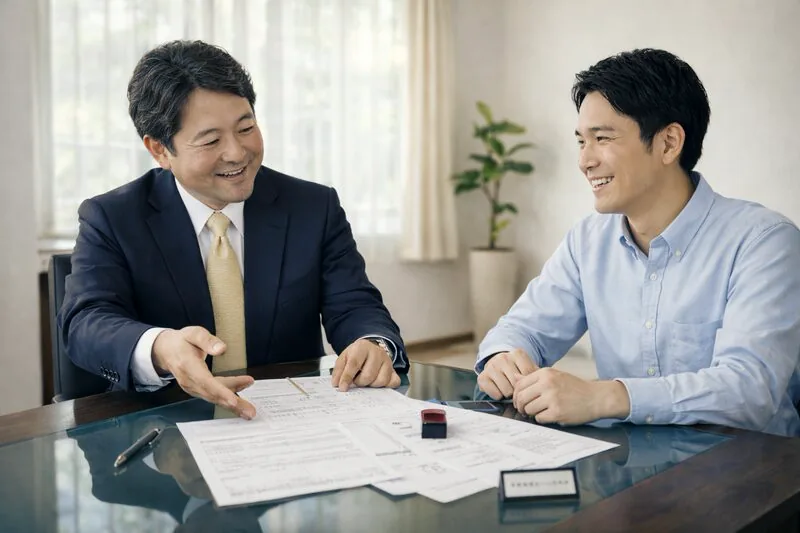
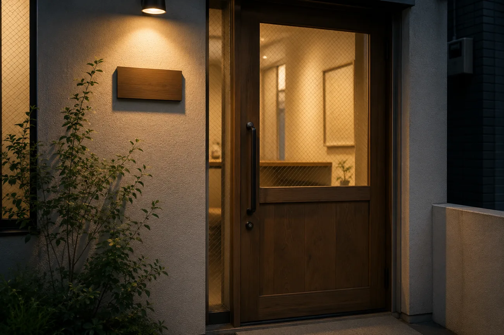

「わからない」を、恥ずかしくなくしてくれた。
確定申告が初めてで、何がわからないのかもわからない状態でした。青木先生は最初の面談で、まず私の仕事の流れから聞いてくれました。制度の説明はそのあと。順番が逆じゃないんだ、と驚いたのを覚えています。今では毎年、安心してお任せしています。
Voice of clients
ご相談のきっかけは、たいてい「これでいいのか分からない」という漠然とした不安です。
その不安がどう変わったのか、そのままの言葉で掲載しています。

確定申告が初めてで、何がわからないのかもわからない状態でした。青木先生は最初の面談で、まず私の仕事の流れから聞いてくれました。制度の説明はそのあと。順番が逆じゃないんだ、と驚いたのを覚えています。今では毎年、安心してお任せしています。
経費の判断に迷ったとき、その場でLINEで相談できます。返事も早く、閉店後に送っても翌朝には返ってくる。以前は「たぶん大丈夫だろう」で処理していたものが、根拠を持って処理できるようになりました。数字の不安が、日々の営業から消えました。
相続の相談で伺いましたが、制度の説明だけでなく「家族でどう話すか」まで一緒に考えてくださいました。実家の評価も現地を見たうえで説明していただき、納得して進められました。結果として納税額も抑えられ、何より兄弟で揉めずに済みました。

売上が伸びてきたので法人化の相談に行ったところ、社会保険料まで含めた試算を出したうえで「あと1年は個人のままがいい」と。仕事を取りにくる人ではないんだな、と。翌年、あらためて設立をお願いしました。
10年お願いしていた事務所から移りました。悪い方ではなかったのですが、質問すると「そういうものです」で終わってしまうことが多くて。今は理由まで説明してもらえるので、自分の事業の数字が自分のものになった感覚があります。
税務調査の通知が届いて頭が真っ白になりましたが、その日のうちに流れを説明してもらえて落ち着けました。当日も横にいてくださって、こちらが答えるべきこと・答えなくていいことを整理してもらえたのが心強かったです。
※ 掲載にあたり、ご本人の許可を得たうえで一部の表現を調整しています。写真はイメージです。

Free Consultation
初回のご相談（60分）は無料です。他の事務所と比べたうえで決めていただいて構いません。
無料相談を予約する